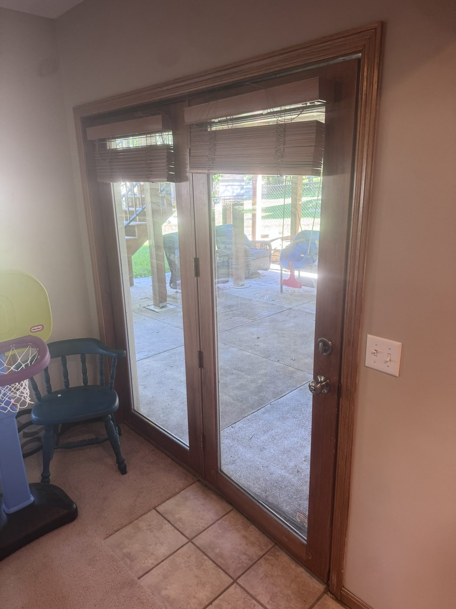
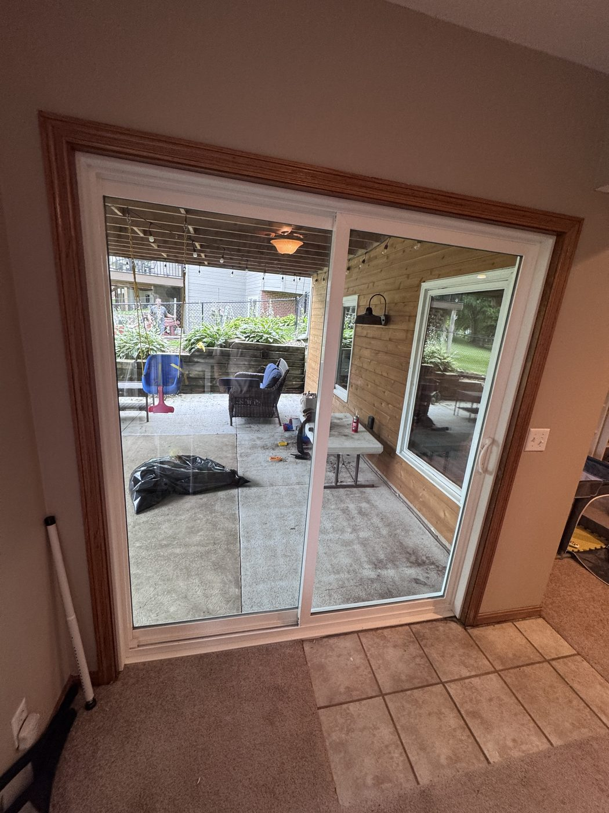

Every house has one. The door you don’t really use. The one that sticks when you pull it, lets a draft in around the edges, and has a coat of paint a few shades off from everything else. You stop noticing it — until you do, and then you can’t stop noticing it.
For a family here in The Ridges, that door was the patio door off their walk-out basement. An older hinged unit, painted white, with a fixed glass panel on one side and a swing door on the other. It worked, technically. But it was dated, it wasn’t sealing the way an exterior door should, and the basement was the kids’ playroom — the room that should have opened right out to the patio barely connected to it at all.

Why Old Patio Doors Stop Earning Their Keep
A patio door is one of the hardest-working openings in a house. It’s a big piece of glass, a moving part, and a weather seal, all in one — and it takes the full force of the weather on the side of the house that usually gets the least attention. After fifteen or twenty years, a few things tend to go wrong at once.
The weatherstripping flattens out and stops sealing, so you get drafts and a higher heating bill. On older double-pane units the seal between the panes can fail, leaving that foggy, hazy look that no amount of cleaning fixes. Hinges and rollers wear, so the door drags, sticks, or won’t latch cleanly. And the hardware and finish simply date the room — a 1990s painted door pulls down an otherwise updated space.
None of it is dramatic. That’s exactly why these doors hang on for years longer than they should. But a door that’s hard to open and leaks air is a door the family quietly stops using.

What Actually Goes Into a Replacement
Swapping a patio door isn’t just “take the old one out, put the new one in.” Most of the job is what happens around the door — and it’s the part that determines whether the new one lasts.
For this project we installed a Pella 150 Series sliding patio door — a white vinyl unit with Low-E glass, which keeps more heat in during Omaha winters and blocks more summer sun. The family wanted a slider instead of a hinged door, which freed up the floor space the old swing door used to eat and made the whole opening feel wider. Here’s how the job goes:
- Pull the old unit and trim. The existing door, frame, and interior and exterior trim come out, and the rough opening gets cleaned up.
- Inspect the opening. This is the step that matters most. With the trim off, we check the framing and sill for any hidden rot or water damage — common on doors that haven’t sealed well for years. Anything we find gets discussed before we go further.
- Set the new door level, plumb, and square. A patio door that isn’t perfectly level will never roll or latch right. It gets shimmed and fastened so it operates smoothly and seals evenly.
- Insulate, flash, and seal. Gaps get filled with expanding foam, the exterior gets flashed and sealed with flashing tape and exterior-grade caulk, so water sheds away from the opening instead of working into it.
- New trim, inside and out, and caulk every seam. Fresh interior and exterior trim, caulked clean, for a weathertight, finished look.
The glass is what you see. The seal, the flashing, and a door that’s set dead level are what you live with. Done right, a patio door swap is one of those projects you stop thinking about the day it’s finished.
The Result

The basement playroom finally connects to the backyard the way it always should have. The slider opens easily, latches cleanly, and seals tight — no more draft around the edges. The clear Low-E glass brings in more light, and the white frame reads clean and current instead of dated.

From the patio side, the new door sits cleanly in the existing cedar siding with fresh, sealed trim. It’s the kind of upgrade that looks like it was always meant to be there.
Thinking about a door or window of your own? Our Window & Door Replacement service covers the full job — pulling the old unit, prepping and inspecting the opening, setting the new one level and sealed, and finishing the trim inside and out.
What This Kind of Project Costs
Every window and door replacement starts with a free on-site estimate. We measure the opening, talk through your options — slider versus hinged, glass and finish choices — and put a flat-rate written quote in your hands before any work starts. No hourly surprises. The one thing we can’t always see until the old unit is out is the condition of the framing behind it; if there’s hidden rot, we stop and walk you through the options before going further. Nothing extra happens without your okay.
Let Your Handy Neighbor Take a Look
A sticking, drafty door is easy to live with and easy to keep putting off. But it’s also one of the most satisfying things to fix — the difference between the old door and the new one is something the family feels every single day.
If you’ve got a patio door that sticks, a window with a fogged-up seal, or an entry door that’s seen better days, book a free, no-obligation on-site estimate. Twenty-plus years of experience, right here in The Ridges, at the best value for your neighborhood.